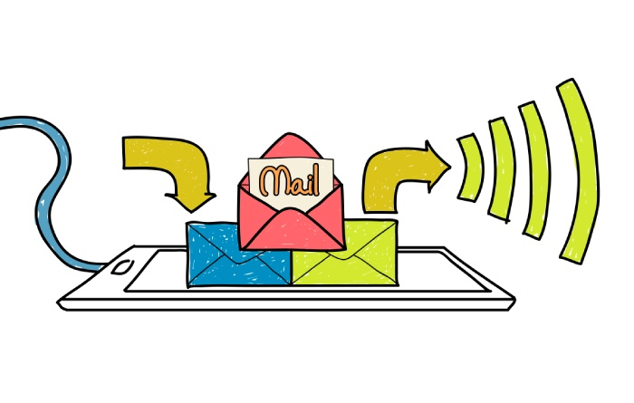

How To Reduce Email Bounces With
The Right SMTP Service
The Right SMTP Service
Successful email marketing and business communication depend on messages reaching their intended recipients. Even well-written emails can bounce because of invalid addresses, server restrictions, poor sender reputation, or incorrect authentication settings. These delivery failures can hurt campaign performance, engagement, and domain reputation. Choosing the right Simple Mail Transfer Protocol (SMTP) service can help reduce bounces and improve deliverability. Reliable providers offer tools such as authentication, monitoring, bounce management, and delivery optimization. By understanding how SMTP services work and following good practices, businesses can reduce avoidable bounces and communicate more consistently.
1. Choose a Reliable SMTP Service Provider
Choosing a dependable SMTP provider is an important first step in reducing email bounces. Professional services use optimized mail servers, reliable infrastructure, and delivery management tools to help emails reach their intended recipients.
When comparing providers, look for:
- Strong delivery performance: Reliable infrastructure and consistent results.
- Dedicated IP addresses: More control over sender reputation, especially for organizations sending substantial email volumes.
- Delivery monitoring: Real-time reports to help spot failures and investigate recurring issues.
- Bounce management: Automated processing to help prevent repeated attempts to send to invalid addresses.
Also consider whether the provider offers the scalability, technical support, and security features your changing business communication needs require.
2. Authenticate Your Domain With SPF, DKIM, and DMARC
Email authentication helps verify that messages are authorized to come from your domain and protects against unauthorized senders. Without it, receiving servers may reject, quarantine, or flag legitimate emails as suspicious.
Three key protocols support email authentication:
- SPF (Sender Policy Framework): Specifies which mail servers can send email on behalf of your domain.
- DKIM (DomainKeys Identified Mail): Adds a digital signature that receiving servers can verify to check message integrity.
- DMARC (Domain-based Message Authentication, Reporting, and Conformance): Uses SPF and DKIM alignment to set domain authentication policies and provide reporting.
Correctly configured records help SMTP servers establish trust with receiving mail providers. Regularly check your DNS records with an SPF record checker and DMARC monitoring tools to find configuration errors that may affect email delivery.
3. Maintain a Clean and Updated Email List
Invalid, inactive, and outdated email addresses can contribute to high bounce rates. Before launching a campaign, clean your mailing list: remove addresses that repeatedly hard-bounce or consistently fail delivery, use verification tools to identify invalid addresses, confirm new subscribers with double opt-in, and regularly review inactive contacts. A clean email database reduces unnecessary delivery attempts and helps maintain a positive sender reputation. Regularly remove invalid, inactive, and outdated addresses from your email list to reduce hard bounces and improve deliverability. Use email verification tools and double opt-in to keep subscriber data accurate and protect your sender reputation.
4. Monitor Hard Bounces and Soft Bounces
Understanding bounce types can help businesses pinpoint why emails aren’t delivered.
- Hard bounces are permanent delivery failures. They may occur when an email address doesn’t exist, a domain is invalid, or the receiving server permanently rejects the message. Remove hard-bounced addresses from future campaigns.
- Soft bounces are temporary failures, often caused by a full inbox, server downtime, message size limits, or temporary issues with the receiving server. Monitor these bounces and retry delivery within appropriate limits.
Most reliable SMTP services offer bounce notifications and reporting dashboards. Review these reports to spot recurring delivery problems and address them before bounce rates rise. Access detailed insights on this topic.

5. Optimize Email Sending Practices
Reliable SMTP infrastructure alone can’t ensure good email deliverability. Build consistent sending habits and avoid sudden jumps in volume. Gradually warm up new IP addresses and domains before launching large campaigns, then maintain steady sending volumes. Use recognizable sender names and relevant content that encourages engagement. Avoid misleading subject lines, excessive promotional language, suspicious attachments, and unnecessary links. Monitor spam complaints and unsubscribe requests to help maintain a healthy relationship with recipients. Maintain a consistent sending schedule, gradually increase email volume, and send relevant content to improve deliverability and reduce bounce rates.
6. Track SMTP Performance and Improve Deliverability
Monitor your SMTP performance to see whether your configuration is delivering as expected. Track delivery rates, hard and soft bounces, spam complaints, and sender reputation. Use reporting dashboards to spot unusual delivery patterns and investigate authentication failures. Regularly test server configurations, review DNS records, and update authorized sending sources when your email infrastructure changes. These steps can help you identify technical issues early and maintain reliable email communication. Monitor SMTP performance, review bounce reports, and resolve delivery issues to improve email deliverability and protect sender reputation.